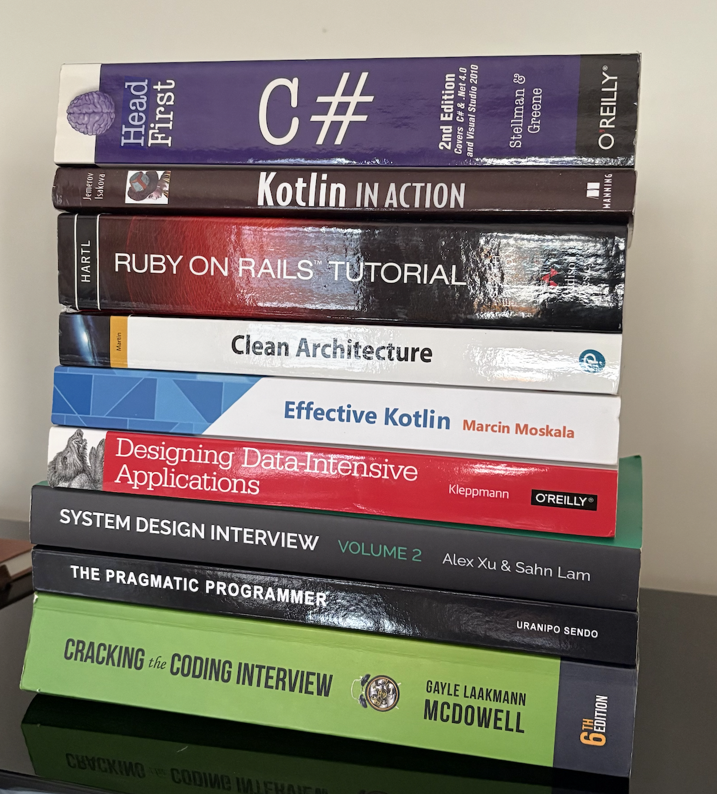

Having just gone through an extensive job search process, I cracked open all the old books and online tomes of advice. Algorithms, data structures, system design, behavioral, interview process – it all comes flying back to me. Not necessarily just recollection of topics where I’ve already spent a lot of time refining my understanding, but I’m once again encountering a much broader point that is almost shouting at me: “There is still so much I need to learn.”
Once I got past the usual jitters of ensuring I wont be caught off guard not knowing basic stuff I really should’ve had cemented permanently in my brain in CS132 many years ago, and actually start recalling some tougher algorithmic questions, I get back to my former frontier and remember how beautiful it is to look out on that frontier.
The field really is fascinating and rewarding still, despite what people may say in the age of constant AI discussion. Every rabbit hole you can go down is extremely tempting, but the information is right at your fingertips (even now moreso with the aforementioned AI boom) and immediately useful. You can go down the path of learning a new language deeply. Engineers who know C++ deeply are still in demand for quant and machine learning roles that command elite compensation. ML/AI focus is still rewarded with high interest in the job market – you have not missed the bus and you can still dive deeply into that subfield, provided you simply have the dedication to learn. There is even still value in learning Leetcode and system design purely from an interview perspective, it is possible to get to a point where you just wont fail almost any reasonable technical interview. Imagine how much that could change your career, if any time a recruiter drops into your inbox at a company that intrigues you, you can factor in a high probability of getting an offer.
Startups are not crowded either. Every day I see a new startup doing something that they will probably be doing many years from now. AI tooling has made code cheap, but it actually underlines the value in deeply understanding an industry and problem space to build a unique tool that solves a problem. The commonality is still your ability to focus, learn, and understand.
The reason I feel compelled to say this is the malaise in the field around the changes presented by AI is palpable, and I’ve felt it myself at times. “Why learn X? AI can just do it better,” is a common sentiment I’ve been hearing for the past two years. Doing is not understanding. There is still enormous value in diving deep into something to learn, and the utility of doing so will only become more pronounced as more people around you fall victim to that malaise. You want to be the person who still understands the fundamentals, who has still spent the weekends diving deep into a niche topic that interests you that becomes suddenly marketable with a shift in the field. While you’re being that person, your competition in the job market, in business generally, is probably moving backwards if they subscribe to the defeatist attitude around them, as the AI tooling will let them understand less and less.